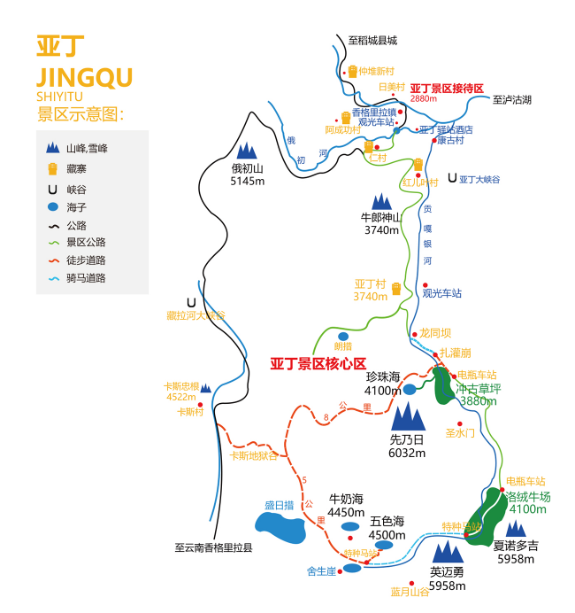
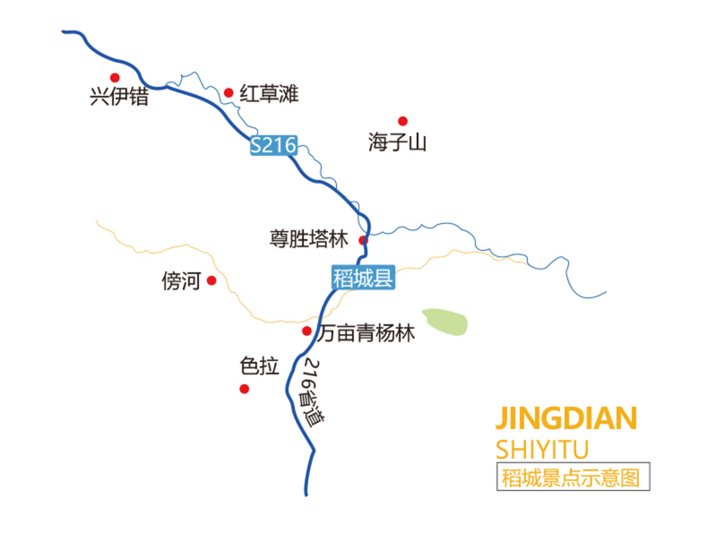
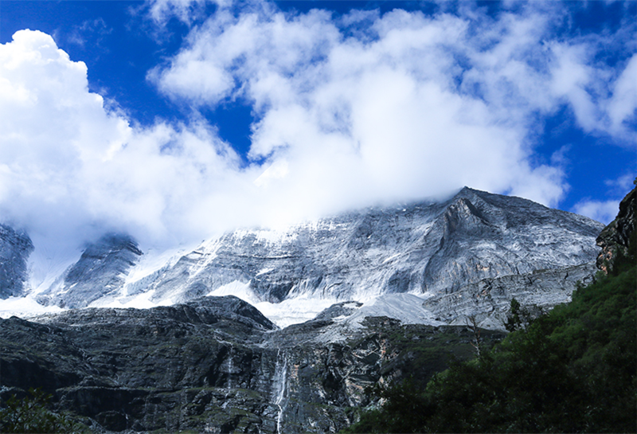
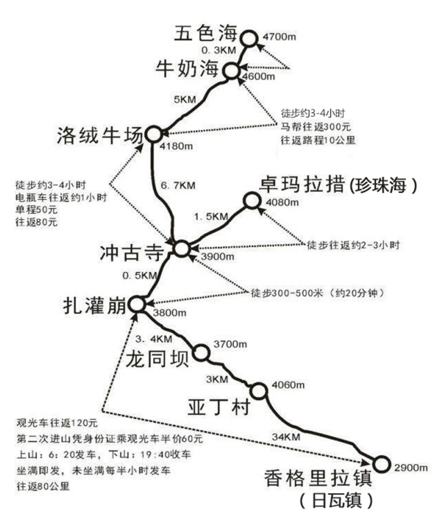
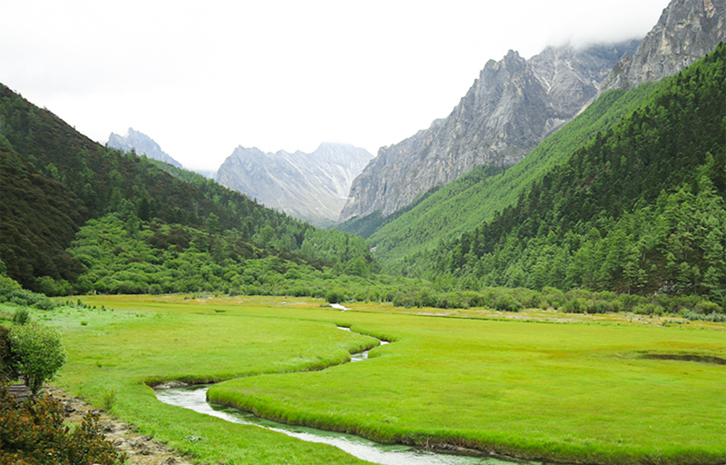
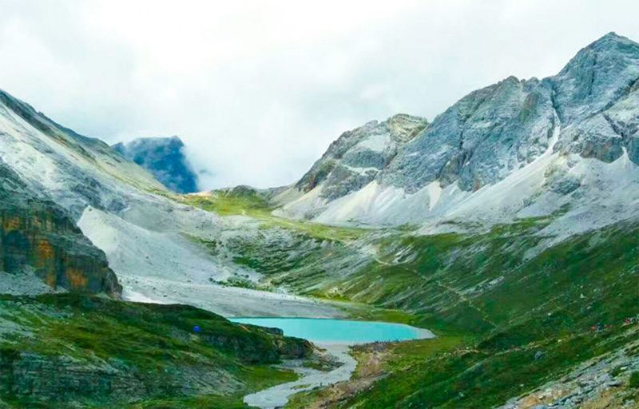

亚丁印象，说在青藏高原雪山深处的一个隐秘地方
从全世界路过的稻城亚丁，在这里有着神圣的雪山，辽阔的高山草甸，秋天斑斓的彩林，五彩的经幡，还有碧蓝的海子，雪 域高原的美似乎全都集中在这里。如当地虔诚的藏民一样，徒步转山是感受亚丁风光的最好方式。下面我来告诉你徒步稻城亚丁全攻略。
稻城亚丁有什么看点？
【亚丁风景区】：冲古寺、 洛绒牛场、牛奶海、五色海、珍珠海、三大神山 （仙乃日峰、央迈勇峰、夏诺多吉峰）
亚丁景区示意图
【稻城景区景点】：傍河、色拉、万亩杨林、尊胜塔林、 红草滩、海子山、兴伊措

稻城景区示意图
什么季节去稻城亚丁最好？
每年的4、5月和9、10月是去稻城亚丁的最佳时间。 因为4-5月稻城春季漫山杜鹃花开，神山积雪比秋天更多，显得更加壮观和明朗。 9-10月秋季的稻城红黄相间，红草地与万亩金色杨树林让稻城五彩斑斓，雪山在蓝天白云的衬托下，更显梦幻。 而6-8月是雨季，不易看到雪山。高原的天气是阴晴不定的，时而晴天，时而下雨。 11月到次年3月是冬季，路上有暗冰不安全，绝大多数酒店都会关门，而且冬天天气较冷， 容易高反，加上稻城停水断电，很不方便。所以不建议冬天去稻城亚丁。

稻城亚丁徒步路线
亚丁景区很大，建议在亚丁安排两天的时间游玩，通常前一天都是住亚丁村或者日瓦镇， 建议第一天玩长线，第二天玩短线，再回稻城。

挑战自我徒步长线：
日瓦——扎灌崩——冲古寺——洛绒牛场——牛奶海——五色海

